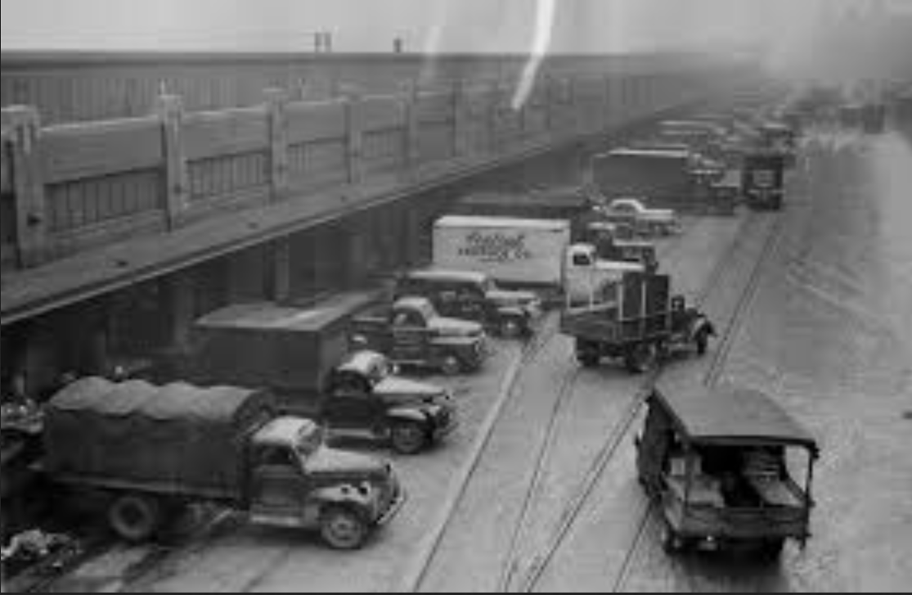

Spice Acres
Culinary-forward farming, woodland pasture pork, and the original Field Kitchen supper series.
Since 1999, the Countryside Initiative has invited farmers back into the national park—restoring historic farmsteads, supporting local food businesses, and keeping the valley’s agrarian character alive.

Long-term leases rehabilitate heritage farmsteads so producers can invest in soil, infrastructure, and community partnerships.
From markets to CSA shares and farm dinners, Countryside farmers keep fresh, seasonal food flowing to neighboring towns.
Workshops, volunteer days, and agritourism open the landscape to learners, eaters, and future growers.
Culinary-forward farming, woodland pasture pork, and the original Field Kitchen supper series.

Certified organic brambles and blueberries, U-pick traditions, and pollinator hedgerows along the ridgeline.

Heritage sheep, orchard rows, and agritourism that invite visitors into a working landscape of fiber and fruit.
Countryside Conservancy founded alongside the National Park Service to steward agricultural leases within the park.
First farmsteads reopened to working farmers; program gains national attention for place-based agriculture in parks.
A network of growers, markets, and educators keeping 19th-century farms active and welcoming the public.
Dinners among the rows, featuring produce from Countryside growers. Limited seats each month.
See eventsSaturday markets with farm stands, bakers, florals, and rotating prepared foods—rain or shine.
Market details
Your gift maintains historic structures, grows farmer training, and keeps public programs open to all.